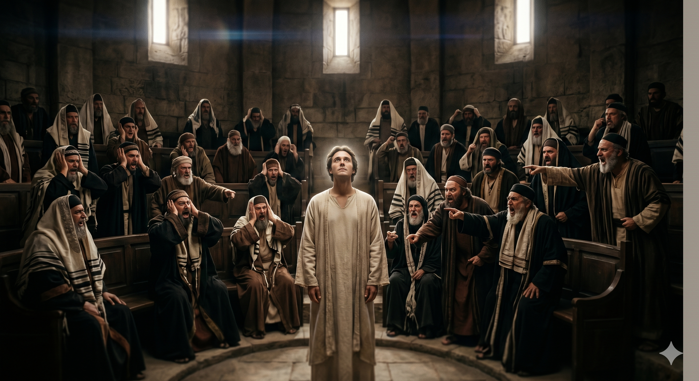

공회 앞에서 손을 들어 하늘을 가리키며 담대하게 설교하는 스데반 — 성전이 아닌 하늘에 계신 하나님을 선포하는 그의 얼굴은 천사의 얼굴처럼 빛났다
"그러나 지극히 높으신 이는 손으로 지은 곳에 계시지 아니하시나니 선지자가 말한 바 주께서 이르시되 하늘은 나의 보좌요 땅은 나의 발등상이니 너희가 나를 위하여 무슨 집을 짓겠으며 나의 안식할 처소가 어디냐 이 모든 것이 다 내 손으로 만든 것이 아니냐 함과 같으니라 목이 곧고 마음과 귀에 할례를 받지 못한 사람들아 너희도 너희 조상과 같이 항상 성령을 거스르는도다" — 사도행전 7:48-51
스데반의 설교가 절정에 이릅니다. 그는 이스라엘 역사를 아브라함부터 다윗까지 훑어온 뒤, 마침내 핵심을 향해 나아갑니다. 이스라엘이 자랑하는 성전 — 그 거룩한 건물이 과연 하나님을 담을 수 있느냐는 질문입니다. 스데반은 이사야서를 인용합니다. "하늘은 나의 보좌요 땅은 나의 발등상이니 너희가 나를 위하여 무슨 집을 짓겠으며." 이것은 성전을 부정하는 것이 아닙니다. 성전을 넘어서는 하나님을 선포하는 것입니다. 하나님은 어떤 건물보다도 크시고, 어떤 장소보다도 초월해 계십니다. 성전이 하나님을 섬기는 도구가 될 때는 선하지만, 성전이 하나님 자신이 되면 우상이 됩니다.
스데반은 여기서 멈추지 않습니다. 그는 공회를 향해 직접적인 도전을 던집니다. "목이 곧고 마음과 귀에 할례를 받지 못한 사람들아 — 너희도 너희 조상과 같이 항상 성령을 거스르는도다." 그리고 선지자들을 박해한 조상들의 죄, 그 의인 예수를 죽인 지금 이 공회의 죄를 적나라하게 선포합니다. "너희가 천사가 전한 율법을 받고도 지키지 아니하였도다." 이것은 목숨을 건 선포였습니다. 스데반은 자신에게 닥칠 결과를 알면서도 하나님의 진리를 양보하지 않았습니다. 그것이 성령 충만한 사람의 모습입니다.

스데반의 설교를 들으며 분노로 이를 갈고 있는 공회원들 — 진리의 말은 사람의 마음을 찌르고, 그 찌름에 어떻게 반응하느냐가 믿음의 척도가 된다
스데반의 선포는 오늘 우리에게도 날카로운 질문을 던집니다. 나는 하나님을 예배하는가, 아니면 예배의 형식을 예배하는가? 성전, 예배당, 예배 순서, 종교적 관습 — 이 모든 것은 하나님을 섬기는 도구입니다. 그러나 그 도구가 하나님 자신보다 더 중요해질 때, 우리도 이스라엘과 같은 실수를 범하는 것입니다. 지극히 높으신 하나님은 손으로 지은 어떤 것에도 다 담기지 않으십니다. 우리의 마음을 열어 그분 자신을 바라봐야 합니다.
또한 스데반의 담대함은 우리에게 도전을 줍니다. 그는 청중이 원하는 말을 하지 않았습니다. 진리를 말했습니다. 그것이 그들을 분노하게 한다는 것을 알면서도, 스데반은 타협하지 않았습니다. 우리는 사람들의 반응을 두려워하여 진리를 부드럽게 만들거나 아예 침묵하지는 않습니까? 성령 충만은 용기를 낳습니다. 스데반은 그것을 자신의 삶으로 증명했습니다.
하나님은 어떤 건물보다 크시고, 어떤 형식보다 높으십니다.
우리가 섬기는 것이 하나님인지, 종교인지 — 스데반이 묻고 있습니다.
진리 앞에서 사람의 눈치를 보지 마십시오.